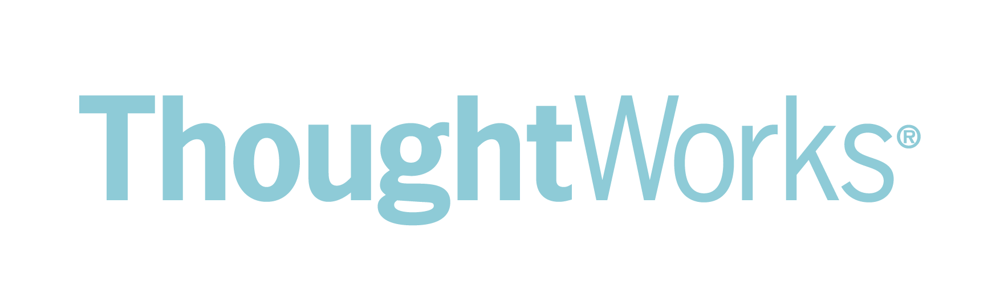

Agilidade para Devs
Quem trabalha com código?
Quem se considera agilista?
Motivação
Lean Coffee
Agilidade é só para gestão?
NÃO!
9 pessoas...
- 7 de gestão
- 1 dev que ia começar a atuar como SM
- ...e Eu
Agilidade NÃO é para desenvolvedores!
- Wagner FuscaAgilidade
!=
Metodologias/Frameworks
Agilidade
==
Valores e princípios
Como eu suporto esses princípios e valores no meu projeto?
Quais práticas eu aplico para isso?
"Estamos descobrindo maneiras melhores de desenvolver software..."
- Nossa maior prioridade é satisfazer o cliente, através da entrega adiantada e contínua de software de valor.
- Entregar software funcionando com frequência, na escala de semanas até meses, com preferência aos períodos mais curtos.
Continuous Integration, Delivery, Deployment
- Aceitar mudanças de requisitos, mesmo no fim do desenvolvimento. Processos ágeis se adequam a mudanças, para que o cliente possa tirar vantagens competitivas.
- As melhores arquiteturas, requisitos e designs emergem de times auto-organizáveis.
- Simplicidade: a arte de maximizar a quantidade de trabalho que não precisou ser feito.
Refatoração, Teste
- Contínua atenção à excelência técnica e bom design, aumenta a agilidade.
- O Método mais eficiente e eficaz de transmitir informações para, e por dentro de um time de desenvolvimento, é através de uma conversa cara a cara.
- Em intervalos regulares, o time reflete em como ficar mais efetivo, então, se ajustam e otimizam seu comportamento de acordo.
Padrões do projeto, normas do time
Linter? Pair-programming? Mob-programming? Tab/Espaço? ;?
- Pessoas relacionadas a negócios e desenvolvedores devem trabalhar em conjunto e diáriamente, durante todo o curso do projeto.
- Construir projetos ao redor de indivíduos motivados. Dando a eles o ambiente e suporte necessário, e confiar que farão seu trabalho.
- Processos ágeis promovem um ambiente sustentável. Os patrocinadores, desenvolvedores e usuários, devem ser capazes de manter indefinidamente, passos constantes.
Visibilidade, Comunicação, acabar com cultura de herói, sem hora-extra
- Software em funcionamento é a medida primária de progresso.
Code-coverage, maturidade do processo, bugs
Práticas com base nos princípios e valores
Dúvidas?
Feedbacks?